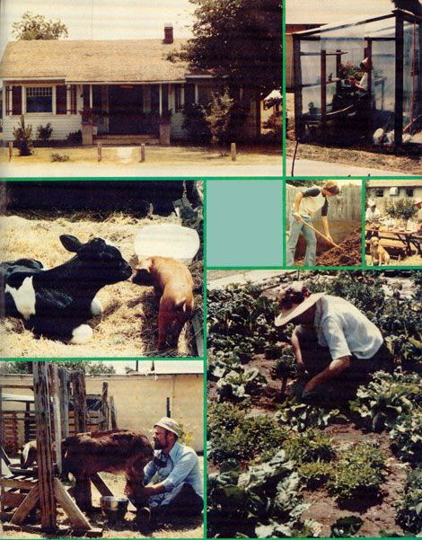

Report From Them That's Doin'
It's been three years since my wife Carolyn and I decided to start taking steps that would-we hoped and still hope-take us away from our urban life and nine-to-five jobs to, eventually, a self-sufficient farmstead.
Well, we haven't completed that journey yet. We're moving in the right direction, though . . . and learning as we go. We finally have our own house, for one thing. The dwelling is kind of old-and not very large-but it suits us just fine.
The second big step in our move toward self-reliance was taken when I quit my computer programming job (the results of that decision have been little short of amazing . . . I don't even shake anymore!) and settled down-with my wife's help -to the task of making our part-time ceramics enterprise into a full-fledged home business!
As you can imagine, we don't pull down any big bucks selling our handicrafts. Our house payments are small, however .. . we raise much of our own food, although we have only about 1/3 acre ... and we still live close enough to town (Porterville, California) to walk to the store when we have to.
One of the ways we've kept our food costs down-and even brought in a little spending money on the side-has been by keeping animals. We have two nanny goats (one of which is a registered Nubian, but she's managed to produce only one doe-and four bucks-in two breeding seasons) which supply us with a good bit of milk.
We also raised two pigs last year. The little critters cost us $15 apiece in the spring and-after a summer of fattening them up-we were able to sell one for $92.25 and have the other butchered for our freezer. (We had a delicious 14-pound home-smoked ham for Thanksgiving dinner, and haven't had to buy any bacon or sausage for quite some time now!)
We keep chickens and ducks, too. But the pride and joy of our backyard livestock operation just has to be our steer! We bought the critter-as a newborn-from dairy for $20. He promptly developed a horrible case of scours and almost died. I managed to convince myself (partly as a result of MOTHER's encouragement, I'm sure) that a bit of basic veterinary care wasn't beyond my capabilities ... and sure enough, after I'd gritted my teeth and given him some medicine and an injection or two, the youngster recovered. Now he weighs upward of 600 pounds . . . and we plan to have him butchered (I'm not sure I'm up to tackling that chore yet) this coming February.
Although we've been pretty fortunate with our animals, last year's garden (our first real attempt at one of family-food-production dimensions) wasn't a great success. I was just learning the fine art of composting at the time, and didn't use enough manure (which, since we didn't have all our animals yet, would have cost precious cash to obtain).
This year, however, things are looking much better. I've been turning out about a half-ton of absolutely beautiful compost (forgive my enthusiasm) every month for some time. To begin "fertilizer production", my son Hans and I built a threesided bin near the back fence (midway between the goat and pig pens). I store my heap of already shredded organic matter-my "pre-compost" pile-immediately in front of the enclosure, and my "pre-precompost" pile (of manure, bedding, waste hay, and leaves that need to be shredded) in front of that.
Every day I haul a wheelbarrow load of manure and spoiled hay from the steer's area and dump it . . . along with the gleanings every two or three days from the goat pen. Then, once a month, my son shreds the "pre-pre-pile" into the "pre-pile" ... using our rotary lawn mower. I simply fork the well-chopped matter-along with some soil-into the bin, wetting it as I go, and turn the heaps once every three or four days for two weeks.
That's all there is to it, and the result is the richest-looking, cleanest -smelling soil builder you could ever imagine. If it gives our crops the boost that we (relying on MOTHER's advice and the evidence provided by "early returns" from our planting beds) believe it will, this year's garden should be one of the lushest in the entire county!
Of course, compost alone won't make crops grow. And we've learned another trick or two since our first horticultural attempt. Probably the most important of these (and definitely the most rewarding in terms of quick results) has been our worm farm.
Last winter Carolyn and I purchased a few hundred red worms and put them in a wooden box half filled with a mixture of yard dirt and compost. I was soon able to put together a few more boxes and spread the rapidly reproducing wrigglers among them. Then I added still more containers and divided the worms again . . . and yet again! There's no telling just how many of the valuable creatures we have on hand now (and by the time I finished estimating their numbers they'd probably have reproduced beyond my guessing range again).
Next spring I plan to "seed" the garden (and all our fruit and nut trees) with the crawlers, and use the great mass of worm castings that we've accumulated to fill the planting beds in our new greenhouse! The latter structure is small-6' X 120-'but Hans and I designed and built it ourselves last winter . . . for about $100! I figure it'll be big enough to serve our purposes, once we have enough experience to use the little solarium efficiently.
Several of the aforementioned trees-including a navel orange, a lemon, and a walnut-were already on the property when we moved in. We've since planted a dozen fruit and nut producers of our own, though, and are looking forward to seeing whether we'll get a first scant crop this year. (It's our hope that we'll be on our own little farm before the recent plantings reach maturity ... but putting them in gave us a lot of satisfaction, as will whatever harvests we can get from them before we actually take our "final step".)
As you can probably imagine, our teenaged son Hans has been a little slower to appreciate the "rural living in the suburbs" style than have Carolyn and I. It may be that he's still too young to recognize the beauty of making the most of what one has.
We've taken a few giant leaps toward changing his mind, though. Last summer, for instance, Hans's "ag" teacher came out to our place to instruct us in the finer points of pig castration. (EDITOR'S NOTE: If you'd like to learn how this relatively simple task is performed, turn to Randy Kidd's article on page 90.) The instructor was pretty impressed by what we'd accomplished, and he went so far as to pass his feelings on to our son, it seems. At any rate, Hans came up to me a few days later and said-with a touch of awe in his voice-"You know, Dad, my teacher says that we have a lot more real agriculture going on at our little place than most full-sized farms around here do!"
I guess that's true, too. And it sure was nice to get a bit of outside encouragement a . . just to remind us that-although we still have a long way to go to accomplish our dreams-we really have come "a far piece" from where we started!
|
 |
|
|